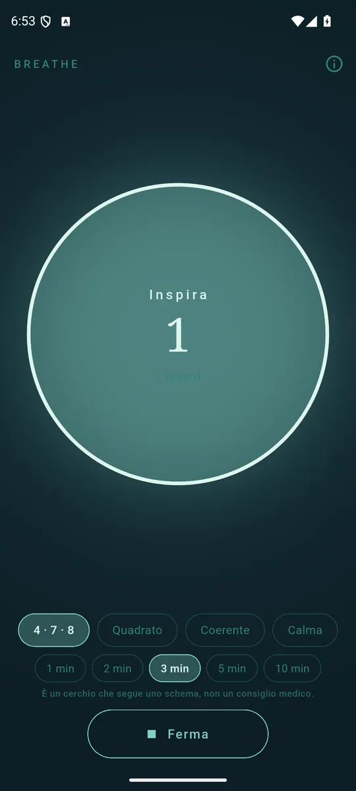
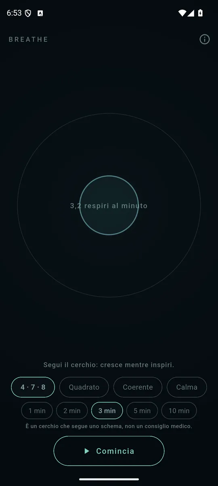
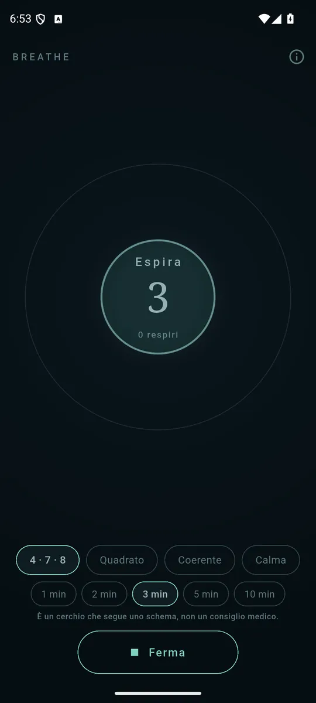

ItalianoEnglish
Un cerchio che cresce mentre inspiri e si stringe mentre espiri. Lo segui, e basta.

Segui il cerchio: cresce mentre inspiri. 
4·7·8, quadrato, coerente, calma. 
Da uno a dieci minuti, con i respiri contati.
Quattro schemi
- 4 · 7 · 8 — dentro per quattro, trattieni per sette, fuori per otto. Quello che la maggior parte delle persone intende quando dice «l'esercizio di respirazione».
- Quadrato — quattro, quattro, quattro, quattro. Per rimettersi in riga più che per addormentarsi.
- Coerente — cinque secondi e mezzo per parte, senza pause: circa cinque respiri e mezzo al minuto.
- Calma — dentro quattro, fuori sei. Più lunga l'uscita dell'entrata.
Sessioni da uno a dieci minuti, con i respiri contati. Una vibrazione breve a ogni cambio di fase, per seguirlo anche a occhi chiusi; lo schermo resta acceso mentre la sessione va.
Il cerchio non ha un'animazione sua
Il raggio è quanto sono pieni i polmoni secondo lo schema, calcolato dal tempo trascorso: non c'è un secondo parere su dove sia il respiro, ed è per questo che seguirlo con il corpo funziona. La curva è un coseno rialzato e non una retta, perché un respiro che cambia velocità di scatto agli estremi non si riesce a seguire — e il senso del cerchio è che si possa seguire senza pensarci.
Non è un dispositivo medico
Breathe non dà consigli medici. È un cerchio che segue uno schema: quanto vale è quanto vale seguirlo, e questo sta fra te e chi te l'ha insegnato. La frase è sulla schermata, non solo qui.
I tuoi dati restano tuoi
Breathe non chiede nessun permesso e non raccoglie niente: schema e durata restano sul telefono. Niente account, nessun server, e della rete ha bisogno solo per gli annunci.
Come si paga
Con un banner ancorato in fondo, e basta: nessun annuncio durante una sessione, nessun abbonamento, nessuno schema tenuto in ostaggio.
Dove trovarla
Non è ancora su Google Play. Quando ci sarà, il collegamento comparirà qui.